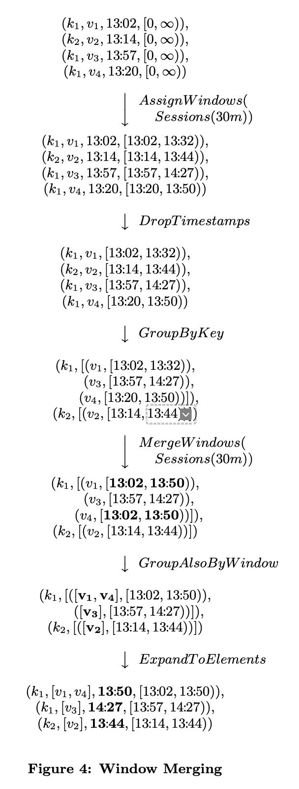

The Dataflow Model: A Practical Approach to Balancing Correctness, Latency, and Cost in Massive-Scale, Unbounded, Out-of-Order Data Processing
Table of Contents
The Dataflow Model: A Practical Approach to Balancing Correctness, Latency, and Cost in Massive-Scale, Unbounded, Out-of-Order Data Processing
https://static.googleusercontent.com/media/research.google.com/en//pubs/archive/43864.pdf
这篇文章主要是统一了bounded / unbounded dataflow的处理方式，可以在一个框架下面运行流批执行引擎，在google内部分别是flumejava 和 millwheel. 在google cloud上实现了cloud dataflow. Dataflow | Google Cloud
1. abstract
要将unbounded data当做流式数据来进行处理，同时考虑需要支持回填数据。流式处理得到的结果可能是临时性的，如果考虑回填的话，这部分数据会变化的。
We propose that a fundamental shift of approach is nec- essary to deal with these evolved requirements in modern data processing. We as a field must stop trying to groom un- bounded datasets into finite pools of information that even- tually become complete, and instead live and breathe under the assumption that we will never know if or when we have seen all of our data, only that new data will arrive, old data may be retracted, and the only way to make this problem tractable is via principled abstractions that allow the prac- titioner the choice of appropriate tradeoffs along the axes of interest: correctness, latency, and cost.
2. introduction
作者认为统一模型应该考虑清楚下面几个问题：比如event time和processing time区分，不同的窗口机制，如何对早期结果数据进行加工。
Taken from that perspective, the conceptual contribution of this paper is a single unified model which:
- Allows for the calculation of event-time ordered re- sults, windowed by features of the data themselves, over an unbounded, unordered data source, with cor- rectness, latency, and cost tunable across a broad spec- trum of combinations.
- Decomposes pipeline implementation across four re- lated dimensions, providing clarity, composability, and flexibility:
- What results are being computed.
- Where in event time they are being computed.
- When in processing time they are materialized.
- How earlier results relate to later refinements.
- Separates the logical notion of data processing from the underlying physical implementation, allowing the choice of batch, micro-batch, or streaming engine to become one of simply correctness, latency, and cost.
在实现上需要增加下面几个机制：
- 如何对数据窗口进行管理，如何更新时间窗口。
- 如何对窗口进行触发，并且这种触发可能还不是一次性的。
- 增量处理模型，意味着数据要做回填。
Concretely, this contribution is enabled by the following:
- A windowing model which supports unaligned event- time windows, and a simple API for their creation and use (Section 2.2).
- A triggering model that binds the output times of results to runtime characteristics of the pipeline, with a powerful and flexible declarative API for describing desired triggering semantics (Section 2.3).
- An incremental processing model that integrates retractions and updates into the windowing and trig- gering models described above (Section 2.3).
- Scalable implementations of the above atop the MillWheel streaming engine and the FlumeJava batch engine, with an external reimplementation for Google Cloud Dataflow, including an open-source SDK [19] that is runtime-agnostic (Section 3.1).
- A set of core principles that guided the design of this model (Section 3.2).
- Brief discussions of our real-world experiences with massive-scale, unbounded, out-of-order data process- ing at Google that motivated development of this model (Section 3.3).
event time和processing time之间区别是：event time认为是发生时间（可以是真实发生时间，也可以是日志到达服务器时间），process time是处理时间。他们之间的差就是skew time.
The two domains of interest are:
- Event Time, which is the time at which the event itself actually occurred, i.e. a record of system clock time (for whatever system generated the event) at the time of occurrence.
- Processing Time, which is the time at which an event is observed at any given point during processing within the pipeline, i.e. the current time according to the system clock. Note that we make no assump- tions about clock synchronization within a distributed system.
windowing概念上有aligned和unaligned. aligned表示所有keys的window是完全相同的，unaligned则每个key有不同的window. 不同的window可能是sliding, 也可能是session. 其中sliding是每个key有自己的固定时间窗口，而session则是按照语义来做处理。
Fixed windows (sometimes called tumbling windows) are defined by a static window size, e.g. hourly windows or daily windows. They are generally aligned, i.e. every window applies across all of the data for the corresponding period of time. For the sake of spreading window completion load evenly across time, they are sometimes unaligned by phase shifting the windows for each key by some random value.
Sliding windows are defined by a window size and slide period, e.g. hourly windows starting every minute. The period may be less than the size, which means the windows may overlap. Sliding windows are also typically aligned; even though the diagram is drawn to give a sense of sliding motion, all five windows would be applied to all three keys in the diagram, not just Window 3. Fixed windows are really a special case of sliding windows where size equals period.
Sessions are windows that capture some period of activ- ity over a subset of the data, in this case per key. Typically they are defined by a timeout gap. Any events that occur within a span of time less than the timeout are grouped together as a session. Sessions are unaligned windows. For example, Window 2 applies to Key 1 only, Window 3 to Key 2 only, and Windows 1 and 4 to Key 3 only.
3. dataflow model
core primitives 其实和之前mapreduce差不多，包括parDo(Parallel Do)和GroupByKey 这两类操作。
在core primitives上需要增加windowing的概念，主要是两个操作：第一个操作是给每个tuple设置时间窗口，第二个则是对考虑当前所有的时间窗口进行merge，产生新的时间窗口
- `Set<Window> AssignWindows(T datum)`, which assigns the element to zero or more windows. This is essentially the Bucket Operator from Li [22].
- `Set<Window> MergeWindows(Set<Window> windows)`, which merges windows at grouping time. This allows data- driven windows to be constructed over time as data arrive and are grouped together.
与此同时需要在tuple上增加时间窗口属性，变为 `(key, value, event_time, window)` 这样的方式。文章给出了增加window operators之后的一个示例。最开始所有的tuple window都是 (0, \(\infty\) ).

可以看到 `window` 这个属性在整个处理过程中非常关键。
triggers & incremental processing.
过去流系统都都会标记一个watermark. 这个watermark通常都是根据一段时间内看到的event time来设定的，比如目前event time最小是20:00, 如果当前proessing time是20:20, watermark是20分钟的话，那么就可以输出20:00之前的数据了。一旦watermark上来之后就回不去了，并且watermark之前的数据就不处理了，造成需要lambda arch来做修正。
如果watermark很短，我们可以达到很短的处理延迟，但是数据会出现错误，并且需要等待batch来做修正；如果watermark很长，那么吐出数据的延迟就很高，数据正确性可以解决。lambda arch其实是streaming data一个极端：watermark很长比如可能是1天。
However, watermarks themselves have two major shortcomings with respect to correctness:
- They are sometimes too fast, meaning there may be late data that arrives behind the watermark. For many distributed data sources, it is intractable to derive a completely perfect event time watermark, and thus im- possible to rely on it solely if we want 100% correctness in our output data.
- They are sometimes too slow. Because they are a global progress metric, the watermark can be held back for the entire pipeline by a single slow datum. And even for healthy pipelines with little variability in event-time skew, the baseline level of skew may still be multiple minutes or more, depending upon the input source. As a result, using watermarks as the sole sig- nal for emitting window results is likely to yield higher latency of overall results than, for example, a compa- rable Lambda Architecture pipeline.
其实正确做法是，对于后来的tuple, 如果过了watermark, 还是需要用增量的方式来处理这部分数据，而不只是简单丢， 如果watermark超过来之后我们还要处理是数据的话。 另外就是需要有合理的watermark机制，在延迟和性能之间做平衡。
增量策略有几种：discarding(不考虑之前结果)， accumulating(和之前结果累积)，acc & retracting(累积并且撤回之前结果). 其中撤回结果这个实现稍微有点难度，可能需要将之前tuples重新处理一次并且撤回。
Accumulating & Retracting: Upon triggering, in addition to the Accumulating semantics, a copy of the emitted value is also stored in persistent state. When the window triggers again in the future, a retraction for the previous value will be emitted first, followed by the new value as a normal datum12. Retractions are neces- sary in pipelines with multiple serial GroupByKeyAnd- Window operations, since the multiple results gener- ated by a single window over subsequent trigger fires may end up on separate keys when grouped down- stream. In that case, the second grouping operation will generate incorrect results for those keys unless it is informed via a retraction that the effects of the original output should be reversed.
概念上我们需要做两件事情：windowing(针对event time将数据合并)，triggering(processing time到了什么点需要输出结果)。
In a nutshell, triggers are a mechanism for stimulating the production of GroupByKeyAndWindow results in response to internal or external signals. They are complementary to the windowing model, in that they each affect system behaviour along a different axis of time:
- Windowing determines where in event time data are grouped together for processing.
- Triggering determines when in processing time the results of groupings are emitted as panes.
代码上写成下面这个样子：
- 对event time按照2分钟进行group by.
- 对于历史数据进行accumulating处理
- 触发实际是超过水位线并且不断检测（延迟数据也会被合理处理）
- 至于这个水位线怎么计算，SDK里面有多种内置方法。
4. patterns
这节是我单独拉出来的，文章这个部分对比了batch/micro-batch/streaming在这种框架下的实现方式。图中需要按照event time 2min做group by + add处理。
batch方式如下，可以看到是在一个processin time看到所有数据。
micro-batch方式如下，多个processing time按照1分钟粒度做拆分，每次processing time是一条直线。
streaming方式，需要等待watermark完全超过，比如处理5这个点必须等待到5的event time + watermark超过。至于9这个点是否会回补就要看实现。

streaming partial方式并不是等待watermark完全超过，可以一分钟处理，也可以等待超过watermark处理。Repeat At Watermark则要求数据做回补。
文章中最后还有一个回撤模型，但是那个session.withGapDuration我没有太看懂。从图中可以看到出现-5这样的回撤数据。
5. implementation
We have implemented this model internally in FlumeJava, with MillWheel used as the underlying execution engine for streaming mode; additionally, an external reimplementation for Cloud Dataflow is largely complete at the time of writing. Due to prior characterization of those internal systems in the literature, as well as Cloud Dataflow being publicly avail- able, details of the implementations themselves are elided here for the sake of brevity. One interesting note is that the core windowing and triggering code is quite general, and a significant portion of it is shared across batch and stream- ing implementations; that system itself is worthy of a more detailed analysis in future work.
Design Principles
Though much of our design was motivated by the real- world experiences detailed in Section 3.3 below, it was also guided by a core set of principles that we believed our model should embody:
- Never rely on any notion of completeness.
- Be flexible, to accommodate the diversity of known use cases, and those to come in the future.
- Not only make sense, but also add value, in the context of each of the envisioned execution engines.
- Encourage clarity of implementation.
- Support robust analysis of data in the context in which they occurred.
While the experiences below informed specific features of the model, these principles informed the overall shape and character of it, and we believe ultimately led to a more comprehensive and general result.